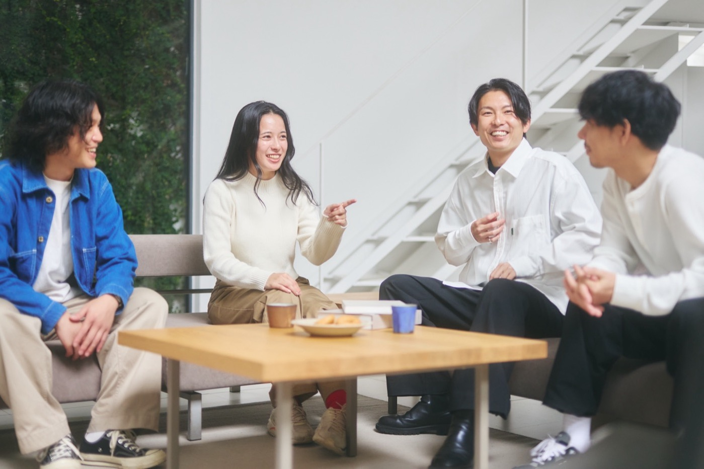
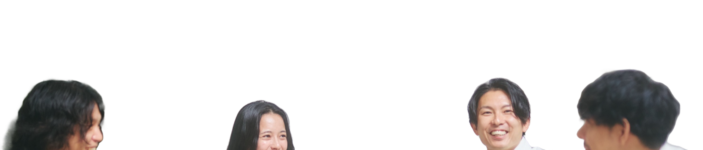

30代の生き方を問い直す、90分。
悪くない毎日。
でも、このままの延長で
いいんだっけ。
仕事は回せるようになった。
大きな不満があるわけでもない。
それでも、ふとした瞬間に小さな違和感がよぎる。
転職するほどじゃない。誰かに相談するほどでもない。
そんなモヤモヤを、同じ30代と肩書きなしで話しながら、
自分のことばにする90分です。
202611.25
水曜日20:00–21:30
参加無料／Zoom開催（PC推奨）／先着10名
LINEで席を確保する（1分で完了）体験会のみの参加もできます。
公式LINEでZoomのURLとリマインドをお送りします。
11/25の都合が合わない方は、次回開催のお知らせを受け取る
体験会のみの参加もできます。公式LINEでZoomのURLとリマインドをお送りします。
11/25の都合が合わない方は、次回開催のお知らせを受け取る